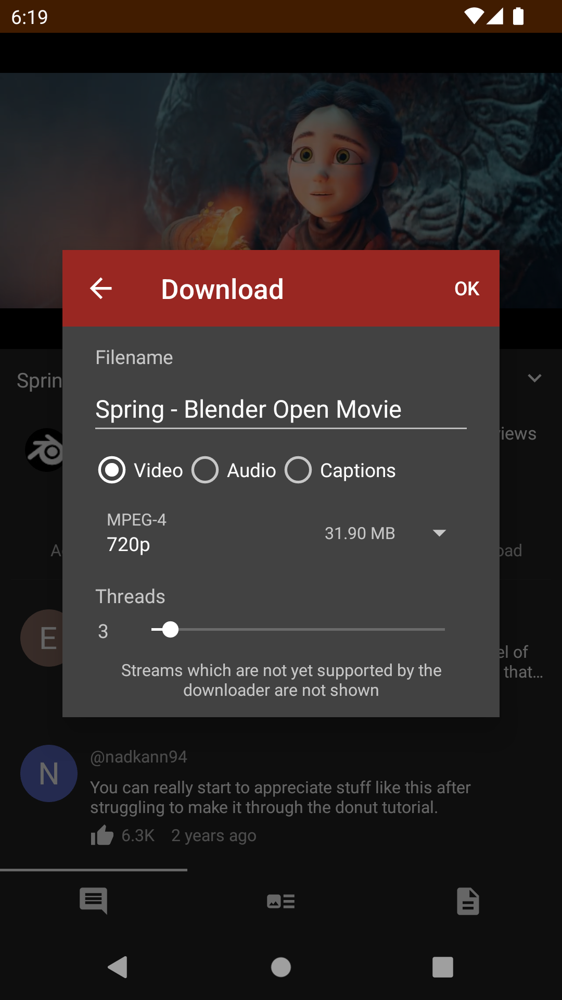
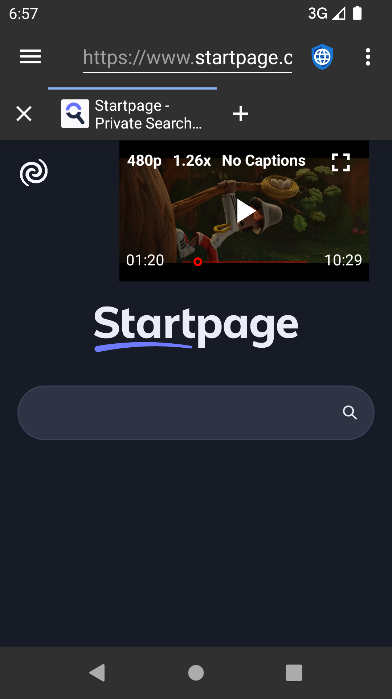
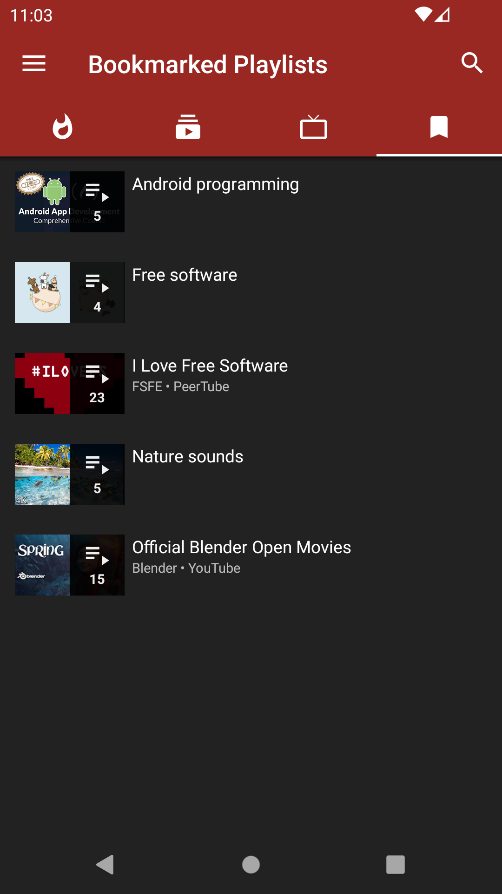

NewPipe 全能力盘点：从下载到直播，一个开源客户端能做多少事
不登录、不追踪、全功能覆盖——NewPipe 把 YouTube 生态搬到 Android 上，同时支持 PeerTube、SoundCloud 等十多个平台。这篇盘点梳理它的下载、直播、播放列表、多服务接入四大能力域，以及哪些人最适合用。
引言：为什么 NewPipe 值得认真盘一次
在 Android 上刷 YouTube，多数人用的要么是官方 App，要么是某家的修改版。但有一类用户一直在找第三条路——既能完整消费视频内容，又不想留下账号痕迹、不想被推荐算法牵着走、还希望一切都在本地可控。NewPipe 就是这条路上走得最远的开源项目之一，它的官网上能看到完整的功能说明和开发路线图。
它不只是一个"无广告的 YouTube 客户端"那么简单。从最初只解析 YouTube 一个平台，到现在覆盖 PeerTube、SoundCloud、Bandcamp、media.ccc.de 等十多个流媒体服务，NewPipe 已经长成了一个完整的开源媒体消费框架。这次盘点把它的能力面拆成四个维度来捋，帮你判断它是不是你的菜。
下载能力：从"看了就没了"到"拿到手上才算数"
下载是 NewPipe 最被称道的功能，也是把它和绝大多数客户端区分开的标志性特性。官方 YouTube App 至今不支持真正的离线保存，而 NewPipe 把下载这件事做透了，安装包从下载拿就行。
触发点遍布你的使用路径。 全屏播放器右上角有下载按钮，视频列表卡片右侧有独立图标，长按卡片的操作菜单里也有入口。不需要进入播放器就能在订阅 Feed 里批量标记下载，效率很高。
下载前的选项面板给足了自由度。 点击下载按钮不会立即开始，而是弹出一个面板让你确认几个关键参数：文件名可以自由改（默认是视频标题），下载类型可以选视频+音频、仅视频、仅音频、字幕，存储目录可以每次手动选或用预设路径，还能看到按所选分辨率估算的文件大小。
SAF 存储管理避免了路径混乱。 NewPipe 使用 Storage Access Framework 来管下载文件。第一次下载时系统会弹出文件选择器让你指定文件夹，选定后它就记住了，后续直接存入。建议在内部存储或 SD 卡上专门建一个 NewPipe 文件夹，别和相机拍的照片、聊天记录混放，后期整理起来会轻松很多。
下载管理页面是个正经的队列系统。 侧边导航的"下载管理"入口能看到所有任务的进度条和速度，支持暂停/恢复、取消，下载完可以直接在文件管理器里打开。已下载内容还能按类型筛选——视频、音频、字幕各归各的。

多平台接入：一个客户端吃到十几种内容生态
NewPipe 的架构设计从一开始就把"多服务"当核心目标，而不是后补的插件。目前稳定支持的服务包括 YouTube（最完整）、PeerTube、SoundCloud、Bandcamp、media.ccc.de、FramaTube、LBRY/Odysee、Piped、Invidious 等，而且列表还在增长。
每个服务的接入不是简单套壳，而是真的适配了各自的内容形态和用户习惯。比如 media.ccc.de 这个德国 CCC 黑客社区的会议录像平台，内容以安全研究、开源项目演示、隐私保护为核心，演讲时长通常 20 到 60 分钟，甚至整段会议几小时。NewPipe 对接它时做了标签分类（安全、隐私、开源、硬件、法律等主题）、会议系列订阅、长片稳定下载这些针对性的适配，普通 YouTube 用户可能不会去，但对安全研究者和技术爱好者来说是挖到宝。

PeerTube 的接入则是另一个思路——它本身就是去中心化的视频网络，NewPipe 不绑定任何一个 PeerTube 实例，让你手动添加或发现新的实例源，这和 NewPipe 自身"不绑定"的设计哲学完全一致。
直播与回放：实时观看、聊天同步，但有小坑
NewPipe 对直播的支持整体够用，但和普通视频播放比起来有几个需要注意的地方。
YouTube 直播的支持最完整。搜索结果里的 LIVE 红色标识会被保留，方便你一眼筛选。观看时实时聊天窗口悬浮在视频右侧，可以随时展开收起——这一点甚至比某些第三方 App 做得好。直播结束后的回放和普通视频没区别，该怎么播怎么播，该怎么下怎么下。
但直播下载有硬限制。正在进行中的直播流无法完整下载，只能下载已播放部分的片段。想保存直播内容的正确姿势是等直播结束后再操作，NewPipe 会自动检测视频是"直播中"还是"已结束回放"，在下载按钮上给出提示，不会让你白等。
延迟也比官方 App 略高——大概 3 到 10 秒的差距。原因是 NewPipe 需要通过 Extractor 解析流媒体地址，多了一层处理，想进一步了解底层机制可以去NewPipe文档翻翻。对"看比赛、看发布会"这种实时性要求极高的场景可能会感到差异，刷普通视频直播完全没影响。
本地播放列表：跨频道攒合集，完全离线
NewPipe 的播放列表和 YouTube 官方播放列表是两种完全不同的东西。官方播放列表存在你的账号云端，换设备要同步；NewPipe 的播放列表完全存储在本地，不需要账号，不依赖任何服务器。
创建和添加的路径有三条：播放器右上角菜单里加、长按视频卡片加、进入频道页批量勾选后加。功能上支持重命名、长按拖动调整顺序、移除单个条目、整个清空。
实际用起来的场景比想象中多。我自己常用的方式有三种：把一个主题的多个教程视频按顺序整理成"学习序列"、把看到感兴趣但暂时没时间看的视频丢进"稍后看"列表、把喜欢的 MV 和现场表演攒成一个合集上下班听。因为全是本地存储，换个手机只要把 NewPipe 文件夹拷过去就能恢复，不受任何平台限制。

短板也要说：不是完美的万能播放器
NewPipe 走的是轻量、开源、无依赖路线，这意味着它在某些地方必须做取舍。
下载队列的稳定性不如专业下载器。 网络切换时偶尔会丢任务，断点续传的表现也不是每次都靠谱。大文件（几百 MB 起步）的长时下载更建议用专门的下载工具，NewPipe 更适合日常随手存几个视频。
部分服务的支持还在持续完善中。 Bandcamp 的播放列表、LBRY 的评论、Odysee 的创作者频道等功能，有的能看但不完整，有的还在开发中。YouTube 的支持最成熟，其他服务的完善程度参差不齐。
直播延迟和下载限制是架构层面的硬约束。 前者来自 Extractor 解析流媒体地址的额外开销，后者来自直播流的技术特性——这两点不是"开发团队不够努力"就能解决的，属于定位决定的边界。
无账号设计的代价是订阅需要手动备份。 本地存储意味着你换手机或重装 App 之前必须记得导出订阅和播放列表数据，不像官方 App 那样自动同步到云端。好在设置里有导出/导入功能，操作不复杂，就是别忘了做。
什么样的人该用 NewPipe
在意隐私和无账号的人。 这是 NewPipe 最核心的受众。如果你不想留下 YouTube 账号的观看记录、不想被推荐算法建模、不想在官方 App 和修改版之间纠结，NewPipe 给了你一个干干净净的选项。零登录、零追踪、全本地存储，这几个点组合起来在 Android 客户端里几乎独此一家。
有跨平台媒体消费需求的人。 不只是刷 YouTube，还想同时看 PeerTube 上的独立创作者视频、SoundCloud 上的独立音乐、CCC 大会的安全讲座——NewPipe 一个客户端就能覆盖。不用来回装五六个 App，体验上的连贯性是修改版客户端比不了的。
喜欢攒离线内容的人。 通勤地铁没信号、公司网络限制、出国漫游不想耗流量——任何需要"提前存好"的场景，NewPipe 的下载能力都能顶上。配合本地播放列表的整理能力，相当于在手机上建了一个自己的媒体库。想深入研究这个项目，代码和整理好的资料分散在GitHub、Gitee、GitCode三处，方便不同网络环境的用户查阅。